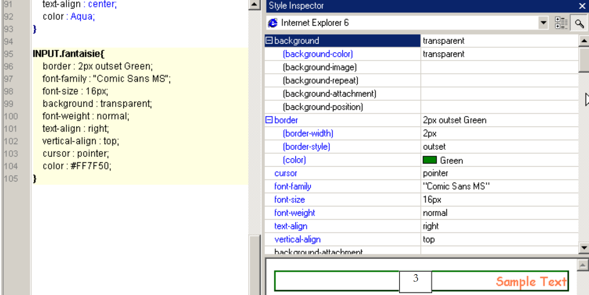
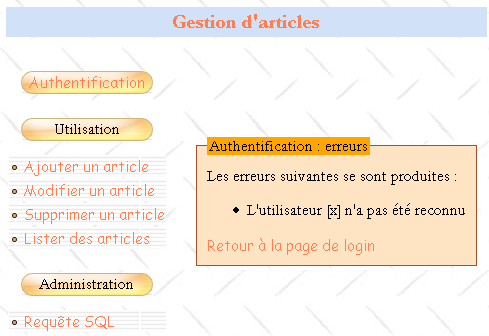
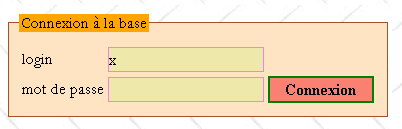
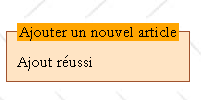
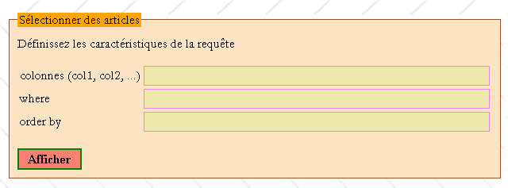
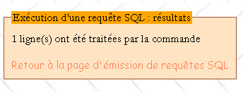

7. دراسة حالة: إدارة قاعدة بيانات للمواد على الويب
تتوفر أكواد هذه الدراسة الإفرادية |ICI|.
الأهداف:
- كتابة فئة لإدارة قاعدة بيانات المقالات
- كتابة تطبيق ويب يعتمد على هذه الفئة
- التعريف بصفحات الأنماط
- اقتراح منهجية أولية لتطوير تطبيقات الويب البسيطة
- التعريف بلغة جافا سكريبت في متصفح العميل
المصادر: استُمد جوهر هذه الدراسة من كتاب «Les cahiers du programmeur - PHP/MySQL» للكاتب جان-فيليب ليبوف، الصادر عن دار النشر Eyrolles.
7.1. مقدمة
يرغب تاجر في إدارة المنتجات التي يبيعها في متجره. ولديه بالفعل تطبيق ACCESS يقوم بهذه المهمة، لكنه يميل إلى خوض تجربة الويب. ولديه حساب لدى مزود خدمة الإنترنت، وهو مزود يسمح لعملائه بتثبيت نصوص برمجية PHP في مجلداتهم الشخصية. وهذا يتيح لهم إنشاء مواقع ويب ديناميكية. علاوة على ذلك، يمتلك هؤلاء العملاء أنفسهم حسابًا MySQL يتيح لهم إنشاء جداول يمكنها توفير البيانات لبرامجهم النصية PHP. وبالتالي، يمتلك التاجر حسابًا MySQL، حيث اسم المستخدم هو admarticles وكلمة المرور هي mdparticles. ولديه قاعدة بيانات dbarticles يتمتع فيها بجميع الصلاحيات. وبذلك، يمتلك التاجر العناصر الكافية لنقل إدارة منتجاته إلى الويب. وبمساعدتكم أنتم الذين تتمتعون بمهارات في تطوير الويب، يشرع في هذه المغامرة.
7.2. قاعدة البيانات
يقوم التاجر بوضع النموذج التالي لواجهة الويب الرئيسية التي يرغب فيها:

سيكون هناك نوعان من المستخدمين:
- المسؤولون الذين يمكنهم القيام بكل شيء في جدول المنتجات (الإضافة، التعديل، الحذف، الاستعراض، ...). سيتمكن هؤلاء من استخدام جميع عناصر القائمة أعلاه. وعلى وجه الخصوص، سيتمكنون من إرسال أي استعلام SQL عبر الخيار [Requête SQL].
- المستخدمون العاديون (غير الإداريين) الذين يتمتعون بحقوق محدودة: حقوق الإضافة، والتعديل، والحذف، والاستعراض. وقد لا يتمتعون إلا ببعض هذه الحقوق، مثل حق الاستعراض فقط على سبيل المثال.
ونظرًا لوجود أنواع مختلفة من مستخدمي قاعدة البيانات الذين لا يتمتعون بنفس الحقوق، فإن هناك حاجة إلى عملية مصادقة. ولهذا السبب تبدأ الصفحة الرئيسية بهذه الخطوة. لمعرفة هوية كل مستخدم، ومن لديه الحق في القيام بماذا، سيتم استخدام جدولين هما USERS و DROITS. وسيكون للجدول USERS الهيكل التالي:
 |
|
قد يكون محتوى الجدول كما يلي:

تحدد الجدول DROITS الصلاحيات التي يتمتع بها المستخدمون غير الإداريين الموجودون في الجدول USERS. وهيكلها كالتالي:
 |
|
قد يكون محتوى الجدول كما يلي:

ملاحظات:
- المستخدم U الموجود في الجدول USERS وغير موجود في الجدول DROITS لا يمتلك أي حقوق.
- في مثالنا، لن يتمكن المستخدمون من الوصول إلا إلى جدول واحد، وهو الجدول ARTICLES. لكن تاجرنا، بحكمته، أضاف مع ذلك حقل «جدول» إلى بنية الجدول DROITS ليتيح لنفسه إمكانية إضافة جداول جديدة لاحقًا إلى تطبيقه.
- لماذا ندير الصلاحيات في جداولنا الخاصة بينما نفترض أننا سنستخدم قاعدة بيانات MySQL القادرة بحد ذاتها (وبشكل أفضل منا) على إدارة هذه الصلاحيات في جداولها الخاصة؟ ببساطة لأن تاجرنا لا يمتلك حقوق الإدارة على قاعدة البيانات MySQL التي تسمح له بإنشاء مستخدمين ومنحهم حقوقًا. دعونا لا ننسى في الواقع أن قاعدة البيانات MySQL مستضافة لدى مزود خدمة الإنترنت وأن التاجر ليس سوى مستخدم عادي لها دون أي حقوق إدارة (لحسن الحظ). ومع ذلك، فإنه يمتلك جميع الصلاحيات على قاعدة بيانات تُسمى dbarticles، والتي يصل إليها حاليًا باستخدام اسم المستخدم admarticles وكلمة المرور mdparticles. وتضم هذه القاعدة جميع جداول التطبيق.
تجمع الجدولة ARTICLES المعلومات حول المنتجات التي يبيعها التاجر. وهي تتكون من:
 |
|
ويمكن أن يكون المحتوى المستخدم في البداية كاختبار كما يلي:

7.3. قيود المشروع
يقوم التاجر هنا بترحيل تطبيق محلي ACCESS إلى تطبيق ويب. وهو لا يعرف ما سيصبح عليه هذا التطبيق وكيف سيتطور. ومع ذلك، فإنه يرغب في أن يكون التطبيق الجديد سهل الاستخدام وقابلًا للتطوير. ولهذا السبب، تصور مستشاره في مجال تكنولوجيا المعلومات، أثناء تصميم الجداول، أنه يمكن أن يكون هناك:
- مستخدمون متعددون يتمتعون بحقوق مختلفة: سيسمح ذلك للتاجر بتفويض مهام معينة إلى أشخاص آخرين دون منحهم حقوق الإدارة
- في المستقبل، جداول أخرى بخلاف الجدول ARTICLES
ويقدم المستشار نفسه مقترحات أخرى:
- فهو يعلم أنه في مجال تطوير البرمجيات، يجب الفصل بوضوح بين طبقات العرض وطبقات المعالجة. وغالبًا ما تكون بنية تطبيق الويب كما يلي:
 |
واجهة المستخدم هنا هي متصفح ويب، ولكنها قد تكون أيضًا تطبيقًا مستقلًا يرسل عبر الشبكة طلبات HTTP إلى خدمة الويب ويقوم بتنسيق النتائج التي ترسلها إليه. تتكون منطق التطبيق من البرامج النصية التي تعالج طلبات المستخدم، وهي هنا البرامج النصية PHP. غالبًا ما يكون مصدر البيانات قاعدة بيانات، ولكنه قد يكون أيضًا دليلًا LDAP أو خدمة ويب بعيدة. من مصلحة المطور الحفاظ على استقلالية كبيرة بين هذه الكيانات الثلاثة بحيث إذا تغير أحدها، فلا يتعين على الاثنين الآخرين التغيير أو يتغيران قليلاً فقط. لذا، يقدم مستشار تكنولوجيا المعلومات الخاص بالتاجر الاقتراحات التالية:
- سنضع المنطق التجاري للتطبيق في فئة PHP. وبذلك سيتألف الكتلة [Logique applicative] المذكورة أعلاه من العناصر التالية:
 |
في الكتلة [Logique Applicative]، يمكننا تمييز
- الكتلة [IE=Interface d'Entrée] التي تمثل بوابة الدخول إلى التطبيق. وهي واحدة بغض النظر عن نوع العميل.
- الكتلة [Classes métier] التي تضم الفئات اللازمة لمنطق التطبيق. وهي مستقلة عن العميل.
- كتلة مولدات صفحات الاستجابة [IS1 IS2 ... IS=Interface de Sortie]. كل مولد مسؤول عن تنسيق النتائج التي توفرها منطقية التطبيق لنوع معين من العملاء: الرمز HTML للمتصفح أو الهاتف WAP، والرمز XML للتطبيق المستقل، ...
يضمن هذا النموذج استقلالية جيدة عن العملاء. سواء تغير العميل أو رغبنا في تطوير طريقة عرض النتائج، فسيكون من الضروري إنشاء أو تكييف مولدات الإخراج [IS].
- في تطبيق الويب، يمكن تحسين الاستقلالية بين طبقة العرض وطبقة المعالجة باستخدام أوراق الأنماط. فهذه الأوراق تتحكم في عرض صفحة الويب داخل المتصفح. ولتغيير هذا العرض، يكفي تغيير ورقة الأنماط المرتبطة به. ولا داعي للتدخل في منطق المعالجة. لذا سنستخدم هنا ورقة أنماط.
- في الرسم البياني أعلاه، ستقوم فئة الأعمال بإنشاء واجهة مع مصدر البيانات. افتراضيًا، هذا المصدر هنا هو قاعدة بيانات MySQL. ولتمكين الانتقال إلى قاعدة بيانات أخرى، سنستخدم المكتبة PEAR التي توفر فئات للوصول إلى قواعد البيانات بغض النظر عن نوعها الفعلي. وبالتالي، إذا ازداد ثراء تاجرنا لدرجة تمكنه من تثبيت خادم ويب IIS من Microsoft في شركته، فسيتمكن من استبدال قاعدة البيانات MySQL بـ SQL Server دون الحاجة (أو مع الحاجة القليلة جدًا) إلى تغيير فئة الأعمال.
7.4. فئة «المنتجات»
يمكن تعريف فئة «المواد» على النحو التالي:
<?php
// classe articles travaillant sur une base d'articles composée des tables suivantes
// articles : (code, nom, prix, stockActuel, stockMinimum)
// users : (login, mdp, admin)
// droits : (login, table, ajouter, modifier, supprimer, consulter)
// c'est l'utilisateur de la classe qui doit fournir le login/mdp qui permet de faire toute opération sur la base
// il a donc déjà tous les droits sur la base. Ceci implique qu'il n'y a pas à prendre
// de précautions de sécurité particulières ici
// bibliothèques
require_once 'DB.php';
class articles{
// attributs
var $sDSN; // la chaîne de connexion
var $sDatabase; // le nom de la base
var $oDB; // connexion à la base
var $aErreurs; // liste d'erreurs
var $oRésultats; // résultat d'une requête select
var $connecté; // booléen qui indique si on est connecté ou non à la base
var $sQuery; // la dernière requête exécutée
var $sUser; // identité de l'utilisateur de la connexion
var $bAdmin; // à vrai si l'utilisateur est administrateur
var $dDroits; // le dictionnaire de ses droits table ->> array(consulter,ajouter,supprimer,modifier)
// constructeur
function articles($dDSN,$sUser,$sMdp){
// $dDSN : dictionnaire définissant la liaison à établir
// $dDSN['sgbd'] : le type du SGBD auquel il faut se connecter
// $dDSN['host'] : le nom de la machine hôte qui l'héberge
// $dDSN['database'] : le nom de la base à laquelle il faut se connecter
// $dDSN['admin'] : le login du propiétaire de la base à laquelle il faut se connecter
// $dDSN['mdpadmin'] : son mot de passe
// $sUser : le login de l'utilisateur qui veut exploiter la base des articles
// $sMdp : son mot de passe
// crée dans $oDB une connexion à la base définie par $dDSN sous l'identité de $dDSN['admin']
// si la connexion réussit et que l'utilisateur $sUser est authentifié
// charge les droits dans $bAdmin et $dDroits les droits de l'utilisateur $sUser
// met dans $sDSN la chaîne de connexion à la base
// met dans $sDataBase le nom de la base à laquelle on se connecte
// met $connecté à vrai
// si la connexion échoue ou si l'utilisateur $sUser n'est pas identifié correctement
// met les msg d'erreurs adéquats dans la liste $aErreurs
// ferme la connexion si besoin est
// met $connecté à faux
...
}//constructeur
// ------------------------------------------------------------------
function connect(){
// (re)connexion à la base
...
}//connect
// ------------------------------------------------------------------
function disconnect(){
// on ferme la connexion à la base $sDSN
...
}//disconnect
// -------------------------------------------------------------------
function execute($sQuery,$bAdmin){
// $sQuery : requête à exécuter
// $bAdmin : vrai si demande d'exécution en tant qu'administrateur
...
}//execute
// --------------------------------------------------------------------------
function addArticle($dArticle){
// ajoute un article $dArticle (code, nom, prix, stockActuel, stockMinimum) à la table des articles
...
}//add
// ----------------------------------------------------------------------
function modifyArticle($dArticle){
// modifie un article $dArticle (code, nom, prix, stockActuel, stockMinimum) de la table des articles
...
}//update
// ----------------------------------------------------------------------
function deleteArticle($sCode){
// supprime un article de la table des articles
// dont on a le code $sCode
...
}//delete
// ----------------------------------------------------------------------
function vérifierArticle(&$dArticle){
// vérifie la validité d'un article $dArticle (code, nom, prix, stockActuel, stockMinimum)
...
}//vérifier
// --------------------------------------------------------------------------
function selectArticles($dQuery){
// exécute une requête select la table des articles
// celle-ci a trois composantes
// liste des colonnes dans $dQuery['colonnes']
// filtrage dans $dQuery['where']
// ordre de présentation dans $dQuery['orderby']
...
}//selectArticles
// --------------------------------
function existeArticle($sCode){
// rend TRUE si l'article de code $sCode existe dans la table des articles
...
}//existeArticle
// --------------------------------------
function existeUser($sUser,$sMdp){
// vérification de l'existence de l'utilisateur $sUser ayant le mot de passe $sMdp
// rend (int $iErreur, string $sAdmin, hashtable $dDroits)
// $iErreur = -1 pour toute erreur d'exploitation de la base - la liste $aErreurs est alors renseignée
// $iErreur = 1 si l'utilisateur n'est pas trouvé (absent ou pas bon mot de passe)
// $iErreur = 2 si l'utilisateur existe mais n'a aucun droit dans la table des droits
// $iErreur = 3 si l'utilisateur existe et est administrateur
// $iErreur = 0 si l'utilisateur existe et n'est pas administrateur
// $sAdmin="y" ssi l'utilisateur existe et est administrateur ($iErreur==3), sinon il est égal à la chaîne vide
// $dDroits est le dictionnaire des droits de l'utilisateur s'il n'est pas administrateur ($iErreur==0)
// sinon c'est un tableau vide
// les clés du dictionnaire sont les tables sur lesquelles l'utilisateur a des droits
// la valeur associée à cette table est à son tour un dictionnaire où les clés sont les droits
// (consulter, ajouter, modifier, supprimer) et les valeurs les chaînes 'y' (yes) ou 'n' (no) selon les cas
...
}//existeUser
// --------------------------------------
function getCodes(){
// rend le tableau des codes
....
}//getCodes
}//classe
?>
تعليقات
- تستخدم فئة «المواد» المكتبة PEAR::DB للوصول إلى قاعدة البيانات، ومن هنا تأتي الأوامر
يفترض هذا التضمين أن البرنامج النصي DB.php موجود في أحد الدلائل الخاصة بالخيار include_path في ملف التكوين PHP.
- يحتاج المطور إلى معرفة قاعدة البيانات التي يتم الاتصال بها والهوية المستخدمة. يتم تزويده بهذه المعلومات في القاموس $dDSN. تجدر الإشارة إلى أن الافتراض الأولي كان أن قاعدة البيانات تسمى dbarticles وأنها مملوكة لمستخدم يُدعى admarticles وكلمة مروره هي mdparticles. ولنتذكر أيضًا أن هذا التطبيق يسمح بعدة مستخدمين يتمتعون بحقوق مختلفة. وهناك غموض يجب توضيحه هنا. يتم فتح الاتصال بالفعل باستخدام هوية admarticles، وفي النهايةتُجرى جميع العمليات على قاعدة البيانات dbarticles بهذه الهوية، لأنها الاسم الوحيد الذي يعرفه SGBD MySQL الذي يمتلك الصلاحيات الكافية لإدارة قاعدة البيانات dbarticles. ولـ«محاكاة» وجود مستخدمين مختلفين، سيُشغَّل المستخدم admarticles بصلاحيات المستخدم الذي تم تمرير اسم تسجيل الدخول ($sUser) وكلمة المرور ($sMdp) الخاصين به كمعلمات إلى الدالة. وبالتالي، قبل إجراء أي عملية على قاعدة بيانات المنتجات، يجب التحقق من أن المستخدم ($sUser، $sMdp) يمتلك بالفعل الصلاحيات اللازمة لإجراء هذه العملية. إذا كان الأمر كذلك، فسيقوم المستخدم admarticles بإجراء العملية نيابة عنه.
- يجب تمرير اسم المستخدم وكلمة المرور الخاصين بمسؤول قاعدة بيانات المنتجات إلى المُنشئ. وهذا إجراء احترازي سليم. فإذا تم تضمين هاتين المعلومتين «بشكل ثابت» في كود الفئة، فسيتمكن أي مستخدم لهذه الفئة من انتحال صفة مسؤول قاعدة بيانات المقالات بسهولة. في الواقع، فئة PHP غير محمية. كما أن السمة $bAdmin الخاصة بالفئة، والتي تشير إلى ما إذا كان المستخدم ($sUser، $sMdp) الذي نعمل من أجله هو مسؤول أم لا، يمكن ضبطها مباشرةً من الخارج كما في المثال التالي:
$oArticles=new articles($dDSN,$sUser,$sMdp)
// ici $sUser a été reconnu comme un utilisateur non administrateur de la base
$oArticle->bAdmin=TRUE;
// maintenant $sUser est devenu administrateur
PHP ليس JAVA أو C# والفئة PHP ليست سوى بنية بيانات أكثر تطورًا قليلاً من القاموس، لكنها لا توفر الأمان الذي توفره الفئة الحقيقية حيث كان سيتم إعلان السمة bAdmin على أنها خاصة أو محمية، مما يجعل تعديلها من الخارج مستحيلاً. ونظرًا لأن مستخدم الفئة يجب أن يكون على علم باسم المستخدم وكلمة المرور الخاصين بمسؤول قاعدة بيانات المقالات، فإن هذا الأخير هو الوحيد الذي يمكنه استخدام الفئة. وبالتالي، لم تعد العملية السابقة ذات أهمية بالنسبة له. الفئة موجودة فقط لتوفير تسهيلات في عملية التطوير له. ومن النتائج المهمة لذلك أنه لا داعي لاتخاذ احتياطات أمنية. ومرة أخرى، فإن من يستخدم الفئة articles هو بالضرورة مسؤول قاعدة بيانات المقالات.
- تدير الفئة أخطاء الاتصال بقاعدة البيانات أو أي أخطاء أخرى بطريقة فريدة عن طريق ملء السمة $aErreurs برسالة أو رسائل الخطأ. بعد كل عملية، يجب على مستخدم الفئة التحقق من هذه القائمة.
- تنبع الطرق addArticle وupdateArticle وdeleteArticle وselectArticles وexecute مباشرةً من نموذج واجهة الويب المقدم سابقًا. فهي تتوافق بالفعل مع خيارات القائمة المعروضة. تعتمد الطريقتان addArticle و modifyArticle على الطريقة vérifierArticle للتحقق من صحة بيانات المقالة التي سيتم إضافتها أو تعديلها. وبنفس المنطق، تسمح الطريقة existeArticle بالتحقق من عدم إضافة مقال موجود بالفعل. يمكن الاستغناء عن هذه الطريقة في حالة استخدام جدول للمقالات يكون الرمز فيه هو المفتاح الأساسي. وفي هذه الحالة، ستقوم الطريقة SGBD نفسها بالإبلاغ عن فشل عملية الإضافة بسبب وجود تكرار. ومن المحتمل أن تفعل ذلك برسالة خطأ غير واضحة باللغة الإنجليزية.
- سيتم تحديد المادة المراد تعديلها أو حذفها بواسطة رمزها الفريد. تتيح الطريقة getCodes الحصول على جميع هذه الرموز.
- تقوم الطريقة disconnect بإغلاق الاتصال بقاعدة البيانات، وهو الاتصال الذي تم فتحه عند إنشاء الكائن. لا نرى فائدة هنا من الطريقة connect التي ستعيد إنشاء اتصال بقاعدة البيانات. سيسمح ذلك بفتح وإغلاق هذا الاتصال حسب الرغبة باستخدام نفس الكائن. ولا تظهر فائدة هذه الطريقة إلا بالاقتران مع تطبيق الويب. سيقوم هذا التطبيق بإنشاء كائن «articles» وسيحفظه في جلسة عمل. ورغم أن الجلسة ستكون قادرة على الاحتفاظ بمعظم سمات الكائن خلال التبادلات المتتالية بين العميل والخادم، إلا أنها غير قادرة على الاحتفاظ بالسمة التي تمثل الاتصال المفتوح. ولذلك، سيتعين إعادة فتح هذا الاتصال عند كل تبادل جديد بين العميل والخادم. سنطلب اتصالاً دائمًا حتى يتم تخزين الاتصال المفتوح في مجموعة اتصالات ويبقى مفتوحًا بشكل دائم. وبذلك، عندما يطلب البرنامج النصي اتصالاً جديدًا، سيتم استرداده من مجموعة الاتصالات. وبذلك نصل إلى نفس النتيجة التي كنا سنحصل عليها لو أن الجلسة تمكنت من تخزين الاتصال المفتوح.
- تتيح الطريقة existeUser للمطور معرفة ما إذا كان المستخدم $sUser، المُعرَّف بكلمة المرور $sMdp، موجودًا بالفعل. وإذا كان الأمر كذلك، فإن الطريقة تتيح معرفة ما إذا كان مستخدمًا إداريًا أم لا (كما هو موضح في الجدول USERS) وتخزن هذه المعلومات في السمة $bAdmin. إذا لم يكن مسؤولاً، فستسترد الطريقة حقوقه من الجدول DROITS وتضعها في السمة $dDroits التي هي عبارة عن قاموس مزدوج الفهرسة: $dDroits[$table][$droit] يساوي 'y' إذا كان المستخدم $sUser يتمتع بالحق $droit على الجدول $table، وتساوي 'n' في الحالات الأخرى.
اكتب فئة articles. سيتم الوصول إلى قاعدة البيانات باستخدام المكتبة PEAR::DB التي تسمح بتجاوز النوع الدقيق لقاعدة البيانات.
7.5. هيكل التطبيق WEB
الآن بعد أن أصبح لدينا الفئة «المهنية» لإدارة قاعدة بيانات المقالات، يمكننا استخدامها في بيئات مختلفة. يُقترح هنا استخدامها في تطبيق ويب. دعونا نكتشف هذا التطبيق من خلال هذه الصفحات المختلفة:
7.5.1. الصفحة النموذجية للتطبيق
لنعد إلى الصفحة الرئيسية التي تم عرضها سابقًا:
1234
ستتخذ جميع صفحات التطبيق الهيكل المذكور أعلاه، وهو عبارة عن جدول مكون من صفين وثلاثة أعمدة يتضمن أربعة مناطق:
- تشكل المنطقة 1 السطر الأول من الجدول. وهي مخصصة للعنوان الذي قد يصاحبه صورة. وقد تم دمج الأعمدة الثلاثة في هذا السطر.
- السطر الثاني يحتوي على ثلاث مناطق، منطقة لكل عمود:
- تحتوي المنطقة 2 على خيارات القائمة. وهي بدورها تحتوي على جدول مكون من عمود واحد وعدة أسطر. وتوضع خيارات القائمة في أسطر الجدول.
- المنطقة 3 فارغة ولا تستخدم إلا لفصل المنطقتين 2 و4. كان من الممكن اتباع طريقة مختلفة لتحقيق هذا الفصل.
- المنطقة 4 هي التي تحتوي على الجزء الديناميكي من الصفحة. هذا الجزء هو الذي يتغير من إجراء إلى آخر، بينما تظل الأجزاء الأخرى كما هي.
سيُسمى البرنامج النصي PHP الذي يُنشئ هذا النموذج من الصفحات باسم main.php وقد يكون كما يلي:
<html>
<head>
<title>Gestion d'articles</title>
<link type="text/css" href="<?php echo $dConfig['urlPageStyle'] ?>" rel="stylesheet" />
</head>
<body background="<?php echo $dConfig['urlBackGround'] ?>">
<table>
<tr height="60">
<td colspan="3" align="left" valign="top" >
<h1><?php echo $main["title"] ?></h1>
</td>
</tr>
<tr>
<td>
<table>
<tr>
<td class="menutitle" >
<a href="<?php echo $main["liens"]["login"] ?>" ?>Authentification</a>
</td>
</tr>
<tr>
<td><br /></td>
</tr>
<tr>
<td class="menutitle" >
Utilisation
</td>
</tr>
<tr height="10"></tr>
<tr>
<td class="menublock" >
<img alt="-" src="../images/radio.gif" />
<a href="<?php echo $main["liens"]["addArticle"] ?>" ?>
Ajouter un article
</a>
</td>
</tr>
<tr>
<td class="menublock" >
<img alt="-" src="../images/radio.gif" />
<a href="<?php echo $main["liens"]["updateArticle"] ?>">
Modifier un article
</a>
</td>
</tr>
<td class="menublock" >
<img alt="-" src="../images/radio.gif" />
<a href="<?php echo $main["liens"]["deleteArticle"] ?>">
Supprimer un article
</a>
</td>
</tr>
<tr>
<td class="menublock" >
<img alt="-" src="../images/radio.gif" />
<a href="<?php echo $main["liens"]["selectArticle"] ?>">
Lister des articles
</a>
</td>
</tr>
<tr>
<td><br /></td>
</tr>
<tr>
<td class="menutitle" >
Administration
</td>
</tr>
<tr height="10"></tr>
<tr>
<td class="menublock" >
<img alt="-" src="../images/radio.gif" />
<a href="<?php echo $main["liens"]["sql"] ?>" >
Requête SQL
</a>
</td>
</tr>
</table>
</td>
<td>
<img alt="/" src="../images/pix.gif" width="10" height="1" />
</td>
<td>
<fieldset>
<legend><?php echo $main["légende"] ?></legend>
<?php
include $main["contenu"];
?>
</fieldset>
</td>
</tr>
</table>
</body>
</html>
تم تمييز الحقول التي تم تعيين معلماتها في الصفحة في القائمة أعلاه. يتم تعيين معلمات الصفحة النموذجية بعدة طرق:
- من خلال قاموس $main الذي يحتوي على المفاتيح التالية:
- title: العنوان المراد وضعه في المنطقة 1 من الصفحة
- liens: قواميس الروابط التي سيتم إنشاؤها في عمود القائمة. ترتبط هذه الروابط بخيارات القائمة في المنطقة 2
- contenu: عنوان URL للصفحة المراد عرضها في المنطقة 4
- عن طريق قاموس $dConfig يجمع معلومات مستمدة من ملف تكوين التطبيق المسمى config.php
- من خلال فئات تندرج ضمن ورقة الأنماط المستخدمة من قبل الصفحة:
تستخدم الصفحة هنا فئات الأنماط التالية:
- menutitle: لخيار رئيسي في القائمة
- menublock: لخيار ثانوي في القائمة
يؤدي تغيير أي من المعلمات إلى تغيير مظهر الصفحة. وبالتالي، فإن تغيير $main['title'] سيؤدي إلى تغيير عنوان المنطقة 1.
7.5.2. المعالجة النموذجية لطلب العميل
يتفاعل العميل مع التطبيق من خلال الروابط الموجودة في المنطقة 2 من الصفحة النموذجية. وستكون هذه الروابط من النوع التالي:
تشير إلى الإجراء الجاري من بين الإجراءات التالية:
| |||||||||||
يمكن تنفيذ الإجراء على عدة مراحل - يشير إلى المرحلة الحالية | |||||||||||
رمز الجلسة عند بدء الجلسة - يسمح للخادم باسترداد المعلومات المخزنة في الجلسة خلال التبادلات السابقة |
وبالمثل، سيكون للسمة «action» في النماذج نفس الشكل. على سبيل المثال، توجد في الصفحة الرئيسية نموذج تسجيل دخول في المنطقة 4. يتم تعريف العلامة HTML لهذا النموذج على النحو التالي:
تتم معالجة طلب العميل بواسطة البرنامج النصي الرئيسي للتطبيق المسمى apparticles.php. وتتمثل مهمته في إنشاء الرد المرسَل إلى العميل. وسيعمل دائمًا بالطريقة نفسها:
- بناءً على اسم الإجراء والمرحلة الحالية، سيقوم بتحويل الطلب إلى دالة متخصصة. وستقوم هذه الدالة بمعالجة الطلب وإنشاء صفحة الرد المناسبة. لكل طلب من العميل، قد تكون هناك عدة صفحات رد محتملة: الصفحة 1، الصفحة 2، ...، الصفحة n. تحتوي هذه الصفحات على معلومات يجب أن تحسبها الدالة. وبالتالي فهي صفحات معلمة. وسيتم إنشاؤها بواسطة البرامج النصية page1.php، page2.php، ...، pagen.php.
- وحرصًا على التوحيد، سيتم أيضًا وضع الأجزاء المتغيرة من الصفحات المراد عرضها في المنطقة 4 من الصفحة النموذجية في القاموس $main.
لنفترض أنه استجابة لطلب ما، يتعين على الخادم إرسال الصفحة pagex.php إلى العميل. وسيتبع الخادم الخطوات التالية:
- سيضع في القاموس $main القيم اللازمة للصفحة pagex.php
- سيضع في $main['contenu']، الذي يشير إلى URL للصفحة المراد عرضها في المنطقة 4 من الصفحة النموذجية، وURL من pagex.php
- سيطلب عرض الصفحة النموذجية باستخدام الأمر
وعندئذٍ ستُعرض الصفحة النموذجية مع وجود رمز البرنامج النصي pagex.php في المنطقة 4، والذي سيتم تقييمه لتوليد محتوى المنطقة 4. وتجدر الإشارة إلى أن هذه المنطقة هي مجرد خلية في جدول. لذلك يجب ألا يبدأ رمز HTML الذي تم إنشاؤه بواسطة pagex.php بعلامات <HTML>، <HEAD>، <BODY>، ... فقد تم إصدارها بالفعل في بداية الصفحة النموذجية. وفيما يلي مثال على الشكل الذي قد يبدو عليه البرنامج النصي login.php الذي يُنشئ المنطقة 4 من الصفحة الرئيسية:
<form name="frmLogin" method="post" action="<?php echo $main["post"] ?>">
<table>
<tr>
<td>login</td>
<td><input type="text" value="<?php echo $main["login"] ?>" name="txtLogin" class="text"></td>
</tr>
<tr>
<td>mot de passe</td>
<td><input type="password" value="" name="txtMdp" class="text"></td>
<td><input type="submit" value="Connexion" class="submit"></td>
</tr>
</table>
</form>
نلاحظ أن الصفحة:
- تقتصر على نموذج
- يتم تعيين إعداداتها من خلال كل من القاموس $main وورقة الأنماط.
7.5.3. ملف التكوين
من الأفضل دائمًا تهيئة التطبيقات قدر الإمكان لتجنب اللجوء إلى الكود لمجرد أننا قررنا، على سبيل المثال، تغيير مسار برنامج نصي أو صورة. لذا، سيقوم التطبيق الرئيسي apparticles.php بتحميل ملف التهيئة config.php عند بدء تشغيله:
سنضع في هذا الملف تعليمات التكوين المخصصة لـ PHP وعمليات تهيئة المتغيرات العامة:
<?php
// configuration de php
ini_set("register_globals","off");
ini_set("display_errors","off");
ini_set("expose_php","off");
ini_set("session.use_cookies","0"); // pas de cookies
// configuration base articles
$dConfig["DSN"]=array(
"sgbd"=>"mysql",
"admin"=>"admarticles",
"mdpadmin"=>"mdparticles",
"host"=>"localhost",
"database"=>"dbarticles"
);
// url des pages
$dConfig['urlBackGround']="../images/standard.jpg";
$dConfig["urlPageStyle"]="mystyle.css";
$dConfig["urlAppArticles"]="apparticles.php";
$dConfig["urlPageMain"]="main.php";
$dConfig["urlPageLogin"]="login.php";
$dConfig["urlPageErreurs"]="erreurs.php";
$dConfig["urlPageInfos"]="infos.php";
$dConfig["urlPageAddArticle"]="addarticle.php";
$dConfig["urlPageUpdateArticle1"]="updatearticle1.php";
$dConfig["urlPageUpdateArticle2"]="updatearticle2.php";
$dConfig["urlPageDeleteArticle1"]="deletearticle1.php";
$dConfig["urlPageDeleteArticle2"]="deletearticle2.php";
$dConfig["urlPageSelectArticle1"]="selectarticle1.php";
$dConfig["urlPageSelectArticle2"]="selectarticle2.php";
$dConfig["urlPageSQL1"]="sql1.php";
$dConfig["urlPageSQL2"]="sql2.php";
$dConfig["urlPageSQL3"]="sql3.php";
// liens de la page principale
$main["liens"]["login"]="$sUrlAppArticles?action=authentifier&phase=0";
$main["liens"]["addArticle"]="$sUrlAppArticles?action=addArticle&phase=0";
$main["liens"]["updateArticle"]="$sUrlAppArticles?action=updateArticle&phase=0";
$main["liens"]["deleteArticle"]="$sUrlAppArticles?action=deleteArticle&phase=0";
$main["liens"]["selectArticle"]="$sUrlAppArticles?action=selectArticle&phase=0";
$main["liens"]["sql"]="$sUrlAppArticles?action=sql&phase=0";
// on mémorise $main dans la configuration
$dConfig["main"]=$main;
?>
7.5.4. ورقة الأنماط المرتبطة بالصفحة النموذجية
لقد رأينا أن استجابة الخادم كانت بتنسيق فريد هو main.php. وقد لاحظنا أن هذا البرنامج النصي ينتج صفحة خام خالية من تأثيرات العرض. وهذا أمر جيد لعدة أسباب:
- لا يتعين على المطور أن يقلق بشأن العرض الرسومي للصفحة التي ينشئها. فهو في الواقع لا يمتلك بالضرورة المهارات اللازمة لإنشاء صفحات رسومية جذابة. ويمكنه هنا التركيز كليًا على الكود.
- تسهيل صيانة البرامج النصية. فإذا احتوت هذه البرامج على سمات عرض، فلن تظهر بوضوح لا بنية الكود ولا بنية العرض. غالبًا ما يُعهد بالجانب الرسومي للصفحات إلى مصمم جرافيك. ومن المحتمل ألا يرغب هذا المصمم في البحث في برنامج نصي لا يفهمه، بحثًا عن سمات العرض التي يتعين عليه تعديلها.
ومع ذلك، لا بد من الاهتمام بالجانب الرسومي للصفحات. ففي الواقع، هذا هو ما يجذب مستخدمي الإنترنت إلى الموقع. وهنا، يتم تفويض العرض إلى ورقة أنماط. تشير الصفحة main.php في كودها إلى ورقة الأنماط التي يجب استخدامها لعرضها:
<head>
<title>Gestion d'articles</title>
<link type="text/css" href="<?php echo $dConfig['urlPageStyle'] ?>" rel="stylesheet" />
</head>
ورقة الأنماط المستخدمة في هذا المستند هي التالية:
BODY {
background : url(../images/standard.jpg);
border : 2px none #FFDAB9;
font-family : Garamond;
font-size : 16px;
margin-left : 0px;
padding-left : 20px;
}
INPUT {
background : #EEE8AA;
border : 1px solid #EE82EE;
font-family : Garamond;
font-size : 18px;
}
INPUT.submit{
font-family : "Times New Roman";
font-size : 16px;
background : #FA8072;
border : 2px double Green;
font-weight : bold;
text-align : center;
vertical-align : middle;
cursor : pointer;
}
TD.menutitle{
background-image : url(../images/menugelgd.gif);
height : 23px;
text-align : center;
vertical-align : middle;
background : url(../images/menugelgd.gif) no-repeat center;
}
TD.menublock{
background : url(../images/bandegrismenugd.gif) repeat-x;
text-align : left;
vertical-align : middle;
}
A {
font-family : "Comic Sans MS";
color : #FF7F50;
font-size : 15px;
text-decoration : none;
}
A:HOVER {
background : #FFA07A;
color : Red;
}
FIELDSET {
border : 1px solid #A0522D;
background : #FFE4C4;
margin : 10px 10px 10px 10px;
padding-left : 10px;
padding-right : 10px;
padding-bottom : 10px;
}
LEGEND{
background : #FFA500;
}
TH {
background : #228B22;
text-align : center;
vertical-align : middle;
}
TD.libellé{
border : 1px solid #008B8B;
color : #339966;
}
H1 {
font : bold 20px/30px Garamond;
color : #FF7F50;
background : #D1E1F8;
background-attachment : fixed;
text-align : center;
vertical-align : middle;
font-family : Garamond;
}
SELECT.TEXT {
background : #6495ED;
text-align : center;
color : Aqua;
}
لن نخوض في تفاصيل ورقة الأنماط هذه. سنقبلها كما هي. سنرى لاحقًا كيفية إنشائها وتعديلها. توجد برامج مخصصة لذلك. ومع ذلك، دعونا نوضح دور سمات العرض المستخدمة في ورقة الأنماط:
السمة: | يحدد عرض العلامة HTML: |
<BODY> | |
<H1> (Header1) | |
<A> (رابط) | |
يحدد سمات عرض الرابط عند تمرير الماوس فوقه | |
<FIELDSET> - لا تتعرف جميع المتصفحات على هذه العلامة | |
<LEGEND> - لا تتعرف جميع المتصفحات على هذه العلامة | |
<INPUT> | |
<INPUT class="TEXT"> | |
<INPUT class="SUBMIT"> | |
<TH> (عنوان الجدول) | |
<TD class="menutitle"> (بيانات الجدول) | |
<TD class="menublock"> | |
<TD class="libellé"> |
لنرى من خلال مثال كيف يمكن كتابة قواعد العرض هذه. في هذا المثال، سنستخدم برنامج TopStyle Lite المتاح مجانًا على موقع http://www.bradsoft.com. بمجرد تحميل ورقة الأنماط، تظهر نافذة مكونة من ثلاث مناطق:
- منطقة لتحرير النص. يمكن تعريف سمات العرض يدويًّا شريطة معرفة قواعد كتابة أوراق الأنماط التي تتبع معيارًا يُسمى CSS (أوراق الأنماط المتتالية).
- المنطقة 2 تعرض الخصائص القابلة للتعديل للسمة قيد الإنشاء. هذه هي الطريقة الأسهل. فهي تغني عن الحاجة إلى معرفة الاسم الدقيق لسمات العرض التي يتعدد عددها بشكل كبير
- تُظهر المنطقة 3 الشكل المرئي للسمة قيد الإنشاء
 |
في المنطقة 1 أعلاه، نقوم بنسخ السمة INPUT.submit ولصقها في السمة INPUT.fantaisie. سيحدد هذا السمة عرض العلامة HTML <INPUT class="fantaisie">
 |
لنستخدم المنطقة 2 لتعديل بعض خصائص السمة INPUT.fantaisie:
 |
من الآن فصاعدًا، سيتم عرض أي علامة <INPUT ... class="fantaisie"> موجودة في صفحة HTML مرتبطة بورقة الأنماط السابقة كما هو موضح في المثال الخاص بالمنطقة 3 أعلاه.
تتمتع أوراق الأنماط بأهمية كبيرة. فاستخدامها يتيح تغيير «مظهر» تطبيق ويب من خلال تعديل عنصر واحد فقط فيه: ورقة الأنماط الخاصة به. لا تدعم المتصفحات القديمة أوراق الأنماط. وسيتم تجاهل التوجيه <link ..> أدناه من قبل بعض هذه المتصفحات:
<head>
<title>Gestion d'articles</title>
<link type="text/css" href="<?php echo $dConfig['urlPageStyle'] ?>" rel="stylesheet" />
</head>
في تطبيقنا، سيؤدي ذلك إلى ظهور الصفحة الرئيسية التالية:

هذه صفحة بسيطة خالية من العناصر الرسومية. وقد يكون الوضع أسوأ من ذلك. فهناك بعض إصدارات المتصفحات التي تتعرف على أوراق الأنماط ولكنها تفسرها بشكل خاطئ. وقد يؤدي ذلك إلى ظهور صفحة مشوهة وغير قابلة للاستخدام. ومن هنا تبرز مسألة نوع متصفح العميل. وهناك تقنيات تساعد في تحديد نوع متصفح العميل، لكنها ليست موثوقة تمامًا. يمكن عندئذٍ كتابة أوراق أنماط مختلفة لمتصفحات مختلفة، أو حتى كتابة نسخة بدون أوراق أنماط للمتصفحات التي تتجاهلها. وهذا بالطبع يزيد من عبء مهمة التطوير. وقد تم تجاهل هذه المشكلة المهمة هنا.
بفضل أوراق الأنماط، يمكننا توفير بيئة مخصصة لمستخدمي تطبيقنا. يمكننا عرض صفحة تتيح لهم الاختيار من بين عدة أنماط عرض ممكنة. ويمكنهم اختيار النمط الأنسب لهم. ويمكن تسجيل هذا الاختيار في قاعدة بيانات. وعندما يقوم المستخدم بتسجيل الدخول مرة أخرى، يمكننا عندئذٍ تشغيل التطبيق باستخدام ورقة الأنماط التي اختارها.
7.5.5. وحدة الإدخال في التطبيق
لن يعرف العملاء من التطبيق سوى وحدة الإدخال الخاصة به: apparticles.php. وفيما يلي الخطوط العريضة لكيفية عملها:
- يتم استلام طلب العميل وتحليله. وقد يكون هذا الطلب مُحدَّد المعلمات أو غير مُحدَّد المعلمات. عندما يكون الطلب مُعَرَّفًا، تكون المعلمات المتوقعة كما يلي: action=[action]&phase=[phase]&PHPSESSID=[PHPSESSID]
- إذا لم يتم تكوين الطلب أو إذا كانت المعلمات المستلمة غير المتوقعة، يرسل الخادم صفحة المصادقة (اسم المستخدم، كلمة المرور) كرد. بمجرد أن يقوم المستخدم بتسجيل الدخول بشكل صحيح، يتم إنشاء جلسة عمل. وستُستخدم هذه الجلسة لتخزين المعلومات طوال فترة التبادل بين العميل والخادم.
- إذا تم التعرف على الطلب بشكل صحيح، يتم معالجته بواسطة وحدة تعتمد على الإجراء والمرحلة الحالية.
- تتم جميع عمليات الوصول إلى قاعدة البيانات عبر الفئة الوظيفية articles.php.
- تنتهي معالجة أي طلب دائمًا بإرسال الصفحة main.php إلى العميل، حيث تم تحديدURL للصفحة التي سيتم وضعها في المنطقة 4 من الصفحة النموذجية.
قد يكون الهيكل الأساسي للبرنامج النصي apparticles.php كما يلي:
<?php
// gestion d'une table d'articles
include "config.php";
include "articles.php";
// action à entreprendre
$sAction=$_POST["action"] ? $_POST["action"] : $_GET["action"] ? $_GET["action"] : "authentifier";
$sAction=strtolower($sAction);
// phase éventuelle
$sPhase=$_POST["phase"] ? $_POST["phase"] : $_GET["phase"] ? $_GET["phase"] : "0";
// session
session_start();
$dSession=$_SESSION["session"];
// y-a-t-il une session en cours ?
if(! isset($dSession)){
// authentification de l'utilisateur
if($sAction=="authentifier" && $sPhase=="0") authentifier_0($dConfig);
if($sAction=="authentifier" && $sPhase=="1") authentifier_1($dConfig);
if($sAction=="authentifier" && $sPhase=="2") authentifier_2($dConfig);
// demande incorrecte
authentifier_0($dConfig);
}//if - pas de session
// on récupère la session
$dSession=unserialize($dSession);
// traitement de la demande
// ----- authentification
if($sAction=="authentifier" && $sPhase=="0") authentifier_0($dConfig);
if($sAction=="authentifier" && $sPhase=="1") authentifier_1($dConfig);
if($sAction=="authentifier" && $sPhase=="2") authentifier_2($dConfig);
// ----- ajout d'article
if($sAction=="addarticle" && $sPhase=="0") addArticle_0($dConfig,$dSession);
if($sAction=="addarticle" && $sPhase=="1") addArticle_1($dConfig,$dSession);
if($sAction=="addarticle" && $sPhase=="2") addArticle_2($dConfig,$dSession);
// ----- mise à jour d'article
if($sAction=="updatearticle" && $sPhase=="0") updateArticle_0($dConfig,$dSession);
if($sAction=="updatearticle" && $sPhase=="1") updateArticle_1($dConfig,$dSession);
if($sAction=="updatearticle" && $sPhase=="2") updateArticle_2($dConfig,$dSession);
if($sAction=="updatearticle" && $sPhase=="3") updateArticle_3($dConfig,$dSession);
// ----- suppression d'article
if($sAction=="deletearticle" && $sPhase=="0") deleteArticle_0($dConfig,$dSession);
if($sAction=="deletearticle" && $sPhase=="1") deleteArticle_1($dConfig,$dSession);
if($sAction=="deletearticle" && $sPhase=="2") deleteArticle_2($dConfig,$dSession);
// ----- consultation d'articles
if($sAction=="selectarticle" && $sPhase=="0") selectArticle_0($dConfig,$dSession);
if($sAction=="selectarticle" && $sPhase=="1") selectArticle_1($dConfig,$dSession);
if($sAction=="selectarticle" && $sPhase=="2") selectArticle_2($dConfig,$dSession);
// ----- émission d'une requête SQL
if($sAction=="sql" && $sPhase=="0") sql_0($dConfig,$dSession);
if($sAction=="sql" && $sPhase=="1") sql_1($dConfig,$dSession);
if($sAction=="sql" && $sPhase=="2") sql_2($dConfig,$dSession);
// action erronée - on présente la page d'authentification
session_destroy();
authentifier_0($dConfig,"0");
...
?>
تجدر الإشارة إلى النقاط التالية:
- تنتهي الدوال التي تعالج طلبًا معينًا من العميل بإنشاء صفحة الرد وبأمر exit الذي ينهي تنفيذ البرنامج النصي apparticles.php. بعبارة أخرى، لا يمكن «العودة» من هذه الدوال.
- تقبل الدوال معلمة واحدة أو معلمتين:
- $dConfig هو قاموس يحتوي على معلومات مستمدة من ملف التكوين config.php. وتستخدمه جميع الوظائف.
- $dSession هو قاموس يحتوي على معلومات الجلسة. ولا يوجد إلا عند إنشاء الجلسة، أي بعد نجاح عملية مصادقة المستخدم. ولهذا السبب لا تحتوي وظائف المصادقة على هذا المعامل.
7.5.6. صفحة الأخطاء
يجب على أي تطبيق برمجي أن يكون قادرًا على التعامل بشكل صحيح مع الأخطاء التي قد تحدث. ولا يُستثنى تطبيق الويب من هذه القاعدة. هنا، عند حدوث خطأ، سنضع الصفحة التالية erreurs.php في المنطقة 4 من الصفحة النموذجية:
Les erreurs suivantes se sont produites :
<ul>
<?php
for($i=0;$i<count($main["erreurs"]);$i++){
echo "<li>".$main["erreurs"][$i]."</li>\n";
}//for
?>
</ul>
<a href="<?php echo $main["href"] ?>"><?php echo $main["lien"] ?></a>
وهي تعرض قائمة الأخطاء المحددة في $main['erreurs']. علاوة على ذلك، يمكنها تقديم رابط للعودة، عادةً إلى الصفحة التي سبقت صفحة الأخطاء. سيتم تحديد هذا الرابط بعبارة $main['lien'] و URL $main['href']. ولإزالة هذا الرابط، يكفي إدخال سلسلة فارغة في $main['lien']. فيما يلي مثال على صفحة الأخطاء في حالة قيام المستخدم بتسجيل الدخول بشكل غير صحيح:

7.5.7. صفحة المعلومات
في بعض الأحيان، قد نرغب في تزويد المستخدم بمعلومة بسيطة، على سبيل المثال أن عملية تسجيل الدخول قد نجحت. وللقيام بذلك، سنستخدم الصفحة التالية: infos.php:
لعرض معلومة ردًا على طلب من العميل،
- نضع المعلومات في $main['infos']
- ونضع URL من infos.php في $main['contenu']
فيما يلي، على سبيل المثال، المعلومات التي يتم إرجاعها عندما يقوم المستخدم بتسجيل الدخول بشكل صحيح:

7.6. كيفية عمل التطبيق
لدينا الآن فكرة جيدة عن الهيكل العام للتطبيق الذي سنقوم بكتابته. يبقى لنا عرض مسارات المستخدم داخل التطبيق، والإجراءات التي يمكنه القيام بها، والاستجابات التي يتلقاها من الخادم. وبمجرد الانتهاء من ذلك، سنتمكن من كتابة الدوال التي تعالج الطلبات المختلفة للعميل. فيما يلي، سنعرض كيفية عمل التطبيق من خلال الصفحات التي تظهر للمستخدم استجابةً لبعض هذه الإجراءات. وسنوضح في كل مرة النقاط التالية:
الإجراء الأولي الذي قام به المستخدم وأدى إلى الرد المعروض | |
المعلمات التي أرسلها متصفح العميل إلى الخادم استجابةً للإجراء اليدوي الذي قام به المستخدم | |
النص البرمجي الذي يُنشئ المنطقة 4 من الصفحة النموذجية |
7.6.1. المصادقة
قبل أن يتمكن المستخدم من استخدام التطبيق، سيتعين عليه تسجيل الدخول باستخدام الصفحة التالية:

1 - الطلب الأولي لـ URL apparticles.php 2 - استخدام خيار «المصادقة» من القائمة 3 - طلب مباشر لـ URL articles.php بمعلمات خاطئة | |
1 - لا توجد معلمات 2 - action=authentifier?phase=0 3 - قائمة بالمعلمات الخاطئة | |
login.php |
في الصفحة الرئيسية، يكون الرابط [Ajouter un article] بالصيغة التالية: action=addarticle?phase=0. الروابط الأخرى بنفس الصيغة مع action=(authentifier، updatearticle، deletearticle، selectarticle، sql). يقوم المستخدم بملء النموذج واستخدام الزر [Connexion]:

الاستجابة هي كما يلي:

زر [Connexion] | |
action=authentifier?phase=1 | |
infos.php |
تم تعديل عنوان الصفحة ليشير إلى اسم تسجيل دخول المستخدم وحقوقه كمسؤول/مستخدم. علاوة على ذلك، تم تعديل جميع الروابط في المنطقة 2 لتعكس حقيقة أن جلسة العمل قد بدأت. تمت إضافة المعلمة PHPSESSID=[PHPSESSID] إليها.
إذا لم يتمكن الخادم من التعرف على العميل، فسيتلقى العميل استجابة مختلفة:

زر [Connexion] | |
action=authentifier?phase=1 | |
erreurs.php |
الرابط [Retour à la page de login] هو رابط إلى URL apparticles.php?action=authentifier&phase=2&txtLogin=x. يعيد هذا الرابط العميل إلى صفحة تسجيل الدخول حيث يتم ملء حقل تسجيل الدخول بقيمة المعلمة txtLogin:

رابط [Retour à la page de login] | |
action=authentifier?phase=2&txtLogin=x | |
login.php |
7.6.2. إضافة مقال
يؤدي رابط القائمة [Ajouter un article] إلى عرض الصفحة التالية في المنطقة 4 من الصفحة النموذجية:

رابط [Ajouter un article] | |
action=addArticle?phase=0&PHPSESSID=[PHPSESSID] | |
addarticle.php |
يقوم المستخدم بملء الحقول وإرسالها إلى الخادم باستخدام الزر [Ajouter] الذي ينتمي إلى النوع submit. لا يتم إجراء أي تحقق من جانب العميل. بل يقوم الخادم بذلك. ويمكن للخادم أن يرسل صفحة أخطاء كرد كما في المثال أدناه:
الطلب | الرد |
 |  |
زر [Ajouter] | |
action=addArticle?phase=1&PHPSESSID=[PHPSESSID] | |
erreurs.php |
يتيح الرابط [Retour à la page d'ajout d'article] العودة إلى صفحة الإدخال:
الطلب | الرد |
| |
رابط [Retour à la page d'ajout d'article] | |
action=addArticle?phase=2&PHPSESSID=[PHPSESSID] | |
article.php |
إذا تمت عملية الإضافة دون أخطاء، يتلقى المستخدم رسالة تأكيد:
الطلب | الرد |
 |  |
زر [Ajouter] | |
action=addArticle?phase=1&PHPSESSID=[PHPSESSID] | |
infos.php |
7.6.3. عرض المقالات
يؤدي الرابط الموجود في القائمة [Lister des articles] إلى عرض الصفحة التالية في المنطقة 4 من الصفحة النموذجية:

رابط القائمة [Lister des articles] | |
action=selectArticle?phase=0&PHPSESSID=[PHPSESSID] | |
select1.php |
سيتم إصدار استعلام select [colonnes] from articles where [where] orderby [orderby] على جدول المقالات حيث [colonnes]، [where] و [orderby] هي محتويات الحقول المذكورة أعلاه. على سبيل المثال:
الطلب |
 |
الرد |
 |
زر [Afficher] | |
action=selectArticle?phase=1&PHPSESSID=[PHPSESSID] | |
select2.php |
قد يكون الطلب خاطئًا، وفي هذه الحالة يتلقى العميل صفحة أخطاء:
الطلب |
 |
الاستجابة |
 |
في كلتا الحالتين (سواء حدثت أخطاء أم لا)، يتيح الرابط [Retour à la page de sélection d'articles] العودة إلى الصفحة select1.php:
الطلب |
 |
الرد |
 |
رابط [Retour à la page de sélection d'articles] | |
action=selectArticle?phase=2&PHPSESSID=[PHPSESSID] | |
select1.php |
7.6.4. تعديل المقالات
يؤدي الرابط الموجود في القائمة [Modifier un article] إلى عرض الصفحة التالية في المنطقة 4 من الصفحة النموذجية:

رابط القائمة [Modifier un article] | |
action=updateArticle?phase=0&PHPSESSID=[PHPSESSID] | |
updatearticle1.php |
نختار رمز المقالة المراد تعديلها من القائمة المنسدلة، ثم نضغط على [OK] لتعديل المقالة التي تحمل هذا الرمز:
الطلب | الرد |
 |  |
زر [OK] | |
action=updateArticle?phase=1&PHPSESSID=[PHPSESSID] | |
updatearticle2.php |
بمجرد الحصول على بطاقة المقالة المراد تعديلها، يمكن للمستخدم إجراء تعديلاته:
الطلب | الرد |
 |  |
زر [Modifier] | |
action=updateArticle?phase=2&PHPSESSID=[PHPSESSID] | |
infos.php |
قد يرتكب المستخدم أخطاء أثناء التعديل:
الطلب | الرد |
 |  |
يتيح الرابط [Retour à la page de modification d'article] العودة إلى صفحة الإدخال:
الرابط [Retour à la page de modification d'article] | |
action=updateArticle?phase=3&PHPSESSID=[PHPSESSID] | |
updatearticle2.php |
7.6.5. حذف مقال
يؤدي الرابط الموجود في القائمة [Supprimer un article] إلى عرض الصفحة التالية في المنطقة 4 من الصفحة النموذجية:

رابط القائمة [Supprimer un article] | |
action=deleteArticle?phase=0&PHPSESSID=[PHPSESSID] | |
deletearticle1.php |
يختار المستخدم رمز المقالة المراد حذفها من قائمة منسدلة:
الطلب | الرد |
 |  |
زر [OK] | |
action=deleteArticle?phase=1&PHPSESSID=[PHPSESSID] | |
deletearticle2.php |
يؤكد المستخدم حذف المقالة باستخدام الزر [Supprimer]:
الطلب | الرد |
 |  |
زر [Supprimer] | |
action=deleteArticle?phase=2&PHPSESSID=[PHPSESSID] | |
infos.php |
7.6.6. إرسال طلبات المسؤول
يؤدي الرابط الموجود في القائمة [Requête SQL] إلى عرض الصفحة التالية في المنطقة 4 من الصفحة النموذجية:

رابط القائمة [Requête SQL] | |
action=sql?phase=0&PHPSESSID=[PHPSESSID] | |
sql1.php |
نكتب نص الاستعلام SQL في حقل الإدخال ونستخدم الزر [Exécuter] لتنفيذه. لا يمكن إصدار هذه الاستعلامات إلا للمسؤول كما يوضح المثال التالي:
الاستعلام | الرد |
 |  |
زر [Exécuter] | |
action=sql?phase=1&PHPSESSID=[PHPSESSID] | |
erreurs.php |
يتيح الرابط [Retour à la page d'émission de requêtes SQL] العودة إلى صفحة الإدخال:
الرابط [Retour à la page d'émission de requêtes SQL] | |
action=sql?phase=2&PHPSESSID=[PHPSESSID] | |
sql1.php |
إذا كنت مسؤولاً وكانت الاستعلامات صحيحة من الناحية النحوية:
الطلب |
 |
نحصل على نتيجة الاستعلام:
الرد |
 |
زر [Exécuter] | |
action=sql?phase=1&PHPSESSID=[PHPSESSID] | |
sql2.php |
يمكن إرسال طلبات تحديث الجداول:
الطلب |
 |
الرد |
 |
زر [Exécuter] | |
action=sql?phase=1&PHPSESSID=[PHPSESSID] | |
infos.php |
7.6.7. المهام المطلوبة
كتابة البرامج النصية والوظائف اللازمة للتطبيق:
المعرف | النوع | الدور |
النص البرمجي | نقطة الدخول لمعالجة طلبات العملاء | |
الوظيفة | تعالج الطلب الذي تم تعيين معلماته action=authentifier&phase=0 | |
وظيفة | تعالج الطلب الذي تم تعيين معلماته action=authentifier&phase=1 | |
وظيفة | تعالج الطلب الذي تم تعيين معلماته action=authentifier&phase=2 | |
وظيفة | تعالج الطلب الذي تم تعيين معلماته action=addArticle&phase=0 | |
وظيفة | تقوم بمعالجة الطلب الذي تم تعيين معلماته action=addArticle&phase=1 | |
وظيفة | تعالج الطلب المحدد بـ action=addArticle&phase=2 | |
وظيفة | تعالج الطلب الذي تم تعيين معلماته action=updatearticle&phase=0 | |
وظيفة | تعالج الطلب الذي تم تعيين معلماته action=updatearticle&phase=1 | |
وظيفة | تعالج الطلب الذي تم تعيين معلماته action=updatearticle&phase=2 | |
وظيفة | تعالج الطلب الذي تم تعيين معلماته action=updatearticle&phase=3 | |
وظيفة | تعالج الطلب الذي تم تعيين معلماته action=deletearticle&phase=0 | |
وظيفة | تعالج الطلب الذي تم تعيين معلماته action=deletearticle&phase=1 | |
وظيفة | تعالج الطلب الذي تم تعيين معلماته action=deletearticle&phase=2 | |
وظيفة | تعالج الطلب الذي تم تعيين معلماته action=selectarticle&phase=0 | |
وظيفة | تعالج الطلب المحدد action=selectarticle&phase=1 | |
وظيفة | تعالج الطلب المحدد بالمعلمات action=selectarticle&phase=2 | |
وظيفة | تعالج الطلب المحدد بـ action=sql&phase=0 | |
وظيفة | تعالج الطلب الذي تم تعيين معلماته action=sql&phase=1 | |
وظيفة | تعالج الطلب المحدد action=sql&phase=2 | |
نص برمجي | يقوم بإنشاء الصفحة النموذجية | |
البرنامج النصي | يُنشئ صفحة تسجيل الدخول | |
البرنامج النصي | يُنشئ صفحة الأخطاء | |
نص برمجي | يُنشئ صفحة المعلومات | |
البرنامج النصي | يُنشئ صفحة إضافة مقال | |
نص برمجي | يُنشئ الصفحة 1 لتعديل مقال | |
نص برمجي | يُنشئ الصفحة 2 من تعديل مقال | |
نص برمجي | يولد الصفحة 1 لحذف مقال | |
نص برمجي | يُنشئ الصفحة 2 الخاصة بحذف مقال | |
نص برمجي | يُنشئ الصفحة 1 الخاصة باختيار المقالات | |
نص برمجي | يُنشئ الصفحة 2 من مجموعة المقالات | |
نص برمجي | يُنشئ الصفحة 1 من إرسال الطلبات | |
نص برمجي | يُنشئ الصفحة 2 من إرسال الطلبات |
7.7. تطوير التطبيق
لدينا الآن تطبيق يؤدي المهام المطلوبة منه مع مستوى مقبول من سهولة الاستخدام. سنعمل على تطويره في عدة جوانب:
- SGBD
- أمانه
- مظهره
- أدائه
7.7.1. تغيير نوع قاعدة البيانات
افترضت دراستنا أن SGBD المستخدم هو MySQL. قم بتغييره إلى SGBD وأظهر أن التعديل الوحيد المطلوب هو في تعريف المتغير $dDSN في ملف التكوين config.php.
7.7.2. تحسين الأمان
عند تطوير تطبيق ويب، لا يجب أبدًا الافتراض بأن العميل هو متصفح وأن الطلب الذي يرسله إلينا يخضع للتحكم من خلال النموذج الذي أرسلناه إليه قبل هذا الطلب. يمكن لأي برنامج أن يكون عميلاً لتطبيق ويب، وبالتالي إرسال أي طلب إلى التطبيق، سواء كان محدد المعلمات أم لا. لذا يجب على التطبيق التحقق من كل شيء.
إذا رجعنا إلى كود البرنامج النصي apparticles.php، نلاحظ
- أنه لا يمكن إجراء أي إجراء بخلاف المصادقة دون وجود جلسة عمل. ولا توجد هذه الجلسة إلا إذا نجح المستخدم في المصادقة. تجدر الإشارة إلى أن الجلسة يتم تحديدها بسلسلة أحرف طويلة نسبيًا تُسمى «رمز الجلسة» (session token) وتكون على الشكل التالي: 176a43609572907333118333edf6d1fb. يمكن إرسال هذا الرمز إلى التطبيق بطرق متنوعة، على سبيل المثال باستخدام URL مع إعدادات محددة:
apparticles.php?PHPSESSID=176a43609572907333118333edf6d1fb.
إن أي برنامج يطلب، بشكل متكرر، الرمز URL السابق مع تغيير الرمز بشكل عشوائي على أمل العثور على الرمز الصحيح، من المحتمل جدًّا أن يستغرق عدة أيام قبل أن يولد التركيبة الصحيحة، نظرًا لضخامة عدد التركيبات الممكنة. وبحلول ذلك الوقت، وبما أن مدة الجلسة محدودة، فمن المرجح جدًّا أن تكون قد انتهت. هناك خطر آخر يتمثل في احتمال اعتراض الرمز المميز أثناء مروره بشكل غير مشفر عبر الشبكة. وهذا الخطر حقيقي. لذا يمكن استخدام اتصال مشفر بين الخادم والعميل.
- بمجرد بدء الجلسة، لا يُسمح إلا ببعض الإجراءات. فرمز URL الذي تم تهيئته بـ action=tricher&phase=0&PHPSESSID=[PHPSESSID] سيُرفض لأن الإجراء «tricher» ليس إجراءً مسموحًا به. عندما لا يتم التعرف على المعلمات (action، phase)، يستجيب تطبيقنا بعرض صفحة المصادقة.
ومع ذلك، لا يتحقق التطبيق مما إذا كانت الإجراءات المسموح بها تتسلسل بشكل صحيح. على سبيل المثال، الإجراءان التاليان:
- action=addArticle&phase=0&PHPSESSID=[PHPSESSID]
- action=updateArticle&phase=1&PHPSESSID=[PHPSESSID]
هما إجراءان مسموحان. ومع ذلك، لا يُسمح للإجراء 2 بأن يتبع الإجراء 1.
كيف يمكن تتبع تسلسل طلبات URL التي يطلبها متصفح العميل؟
يمكن الاستعانة بمتغيرين PHP: $_SERVER['REQUEST_URI] و $_SERVER['HTTP_REFERER] وهما معلومتان ترسلان من متصفحات العملاء في رؤوسها HTTP.
$_SERVER['REQUEST_URI]: هذه هي قيمة URI التي طلبها العميل. على سبيل المثال
$_SERVER['HTTP_REFERER]: هذا هو URL الذي كان معروضًا في المتصفح قبل URL الجديد الذي يطلبه المتصفح حاليًا (URI السابق). على سبيل المثال، إذا قام المتصفح الذي عرض ملف URI المذكور سابقًا بإرسال طلب جديد إلى الخادم، فستكون قيمة المتغير $_SERVER['HTTP_REFERER'] الخاص به هي
للتحقق من أن عمليتين في تطبيقنا تتبعان بعضهما البعض بالترتيب الصحيح، يمكننا اتباع الخطوات التالية:
خلال الخطوة 1:
- يتم تسجيل الرمز URI المطلوب (URI1) وتدوينه في الجلسة
في الخطوة 2:
- يتم استرداد الرمز HTTP-REFERER من الإجراء 2. ونستنتج من ذلك الرمز URI (URI2) من الرمز URL الذي كان معروضًا سابقًا في المتصفح الذي أرسل الطلب.
- يتم استرداد URI و URI1 اللذين تم تخزينهما في الجلسة، وهما يمثلان URI الخاص بالإجراء الذي تم طلبه مسبقًا من الخادم
- إذا كانت العملية 2 تلي العملية 1، فيجب أن يكون URI2 = URI1. وإذا لم يكن الأمر كذلك، فسيتم رفض تنفيذ العملية المطلوبة وعرض صفحة المصادقة.
- يتم تسجيل الرمز URI و URI2 الخاصين بالإجراء الجاري في الجلسة للتحقق من الإجراء التالي. وهكذا دواليك.
فيما يلي مثال على ذلك. بعد المصادقة، يتم اختيار الرابط [Ajouter un article]:

الرابط URL لهذه الصفحة هو:
http://localhost:81/st/php/articles/gestion/articles8/apparticles.php?action=addArticle&phase=0&PHPSESSID=006a63e6027f16c70b63cdae93405eeb
مباشرةً في حقل [Adresse] في المتصفح، نقوم بتعديل URL بالطريقة التالية:
http://localhost:81/st/php/articles/gestion/articles8/apparticles.php?action=deleteArticle&phase=1&PHPSESSID=006a63e6027f16c70b63cdae93405eeb
ثم تظهر لنا صفحة المصادقة:

وهذا الأمر يستحق توضيحًا. فعندما نطلب URL عن طريق كتابة هويته مباشرةً في حقل العنوان بالمتصفح، لا يرسل المتصفح رأس HTTP_REFERER. وبالتالي، لا يعثر تطبيقنا على URI الخاص بالإجراء السابق، URI الذي كان قد خزنه في الجلسة. فيقوم عندئذٍ بإعادة إرسال صفحة المصادقة كرد.
هذه الآلية فعالة بالنسبة للمتصفحات، لكنها غير فعالة على الإطلاق بالنسبة لعميل مبرمج. حيث يمكن لهذا العميل إرسال رأس HTTP_REFERER الذي يريده. وبالتالي، يمكنه «الغش» بالادعاء أنه قد مر بالفعل بخطوة معينة في حين أنه لم يفعل ذلك. لذلك يجب التأكد من الالتزام بتسلسل الخطوات. وهكذا، إذا كانت الإجراء المطلوب هو action=addArticle&phase=1 (الإدخال)، فيجب أن تكون العملية السابقة بالضرورة action=deleteArticle&phase=0 (الطلب الأولي لصفحة الإدخال) أو action=addArticle&phase=2 (العودة إلى صفحة الإدخال بعد إضافة خاطئة). وبالمثل، إذا كانت الإجراء المطلوب هو action=addArticle&phase=2 (الإضافة)، فإن الإجراء السابق يجب أن يكون action=addArticle&phase=1 (الإدخال). يمكن إجبار المستخدم على الالتزام بهذه التسلسلات.
في حين أن الآلية الأولى عامة ويمكن تطبيقها على أي تطبيق، فإن الآلية الثانية تتطلب برمجة خاصة بكل تطبيق على حدة وتعتبر أكثر تعقيدًا: حيث يتعين استعراض جميع الإجراءات المحتملة للمستخدم وتسلسلاتها. يمكن تخزين هذه التسلسلات في قاموس كما يوضح الكود التالي:
// authentification
$dPrec['authentifier']['0']=array();
$dPrec['authentifier']['1']=array(
array('action'=>'authentifier','phase'=>'0'),
array('action'=>'authentifier','phase'=>'2')
);
$dPrec['authentifier']['2']=array(
array('action'=>'authentifier','phase'=>'1'),
);
// ajout d'article
$dPrec['addarticle']['0']=array();
$dPrec['addarticle']['1']=array(
array('action'=>'addarticle','phase'=>'0'),
array('action'=>'addarticle','phase'=>'2')
);
$dPrec['addarticle']['2']=array(
array('action'=>'addarticle','phase'=>'1'),
);
// modification d'article
$dPrec['updatearticle']['0']=array();
$dPrec['updatearticle']['1']=array(
array('action'=>'updatearticle','phase'=>'0'),
);
$dPrec['updatearticle']['2']=array(
array('action'=>'updatearticle','phase'=>'1'),
array('action'=>'updatearticle','phase'=>'3')
);
$dPrec['updatearticle']['3']=array(
array('action'=>'updatearticle','phase'=>'2'),
);
// suppression d'article
$dPrec['deletearticle']['0']=array();
$dPrec['deletearticle']['1']=array(
array('action'=>'deletearticle','phase'=>'0'),
);
$dPrec['deletearticle']['2']=array(
array('action'=>'deletearticle','phase'=>'1'),
);
// sélection d'articles
$dPrec['selectarticle']['0']=array();
$dPrec['selectarticle']['1']=array(
array('action'=>'selectarticle','phase'=>'0'),
array('action'=>'selectarticle','phase'=>'2')
);
$dPrec['selectarticle']['2']=array(
array('action'=>'selectarticle','phase'=>'1'),
);
// requête administrateur
$dPrec['sql']['0']=array();
$dPrec['sql']['1']=array(
array('action'=>'sql','phase'=>'0'),
array('action'=>'sql','phase'=>'2')
);
$dPrec['sql']['2']=array(
array('action'=>'sql','phase'=>'1'),
);
$dPrec['action']['phase'] هو جدول يحتوي على الإجراءات التي يمكن أن تسبق الإجراء والمرحلة التي تُستخدم كمؤشر للقاموس. يتم تمثيل هذه الإجراءات السابقة أيضًا بواسطة قاموس ذي مفتاحين هما "الإجراء" و"المرحلة". إذا كان من الممكن أن يسبق أي إجراء إجراءً ما، فسيكون $dPrec['action']['phase'] جدولًا فارغًا. عدم وجود إجراء ما في القاموس يعني أنه غير مسموح به. لنأخذ الإجراء «التوثيق» المذكور أعلاه كمثال:
// authentification
$dPrec['authentifier']['0']=array();
$dPrec['authentifier']['1']=array(
array('action'=>'authentifier','phase'=>'0'),
array('action'=>'authentifier','phase'=>'2')
);
$dPrec['authentifier']['2']=array(
array('action'=>'authentifier','phase'=>'1'),
);
يشير الرمز أعلاه إلى أن الإجراء action=authentifier&phase=0 يمكن أن يسبقه أي إجراء، وأن الإجراء action=authentifier&phase=1 يمكن أن يسبقه الإجراء action=authentifier&phase=0 أو action=authentifier&phase=2، وأن الإجراء action=authentifier&phase=2 يمكن أن يسبقه الإجراء action=authentifier&phase=1.
اكتب الدالة التالية:
// ---------------------------------------------------------------
function enchainementOK(&$dConfig, &$dSession, $sAction, $sPhase){
// vérifie si l'action en cours ($sAction, $sPhase) peut suivre l'action précédente
// mémorisée dans $dSession['précédent']
// le dictionnaire des enchaînements autorisés est dans $dConfig['précédents']
// rend TRUE si l'enchaînement est possible, FALSE sinon
....
تتيح هذه الوظيفة للتطبيق الرئيسي التحقق من صحة تسلسل الإجراءات:
<?php
// gestion d'une table d'articles
include "config.php";
include "articles.php";
// session
session_start();
$dSession=$_SESSION["session"];
// action à entreprendre
$sAction=$_POST["action"] ? $_POST["action"] : $_GET["action"] ? $_GET["action"] : "authentifier";
$sAction=strtolower($sAction);
// phase éventuelle de l'action
$sPhase=$_POST["phase"] ? $_POST["phase"] : $_GET["phase"] ? $_GET["phase"] : "0";
// y-a-t-il une session en cours ?
if(! isset($dSession)){
// authentification de l'utilisateur
if($sAction=="authentifier" && $sPhase=="0") authentifier_0($dConfig);
if($sAction=="authentifier" && $sPhase=="1") authentifier_1($dConfig);
if($sAction=="authentifier" && $sPhase=="2") authentifier_2($dConfig);
// action anormale
authentifier_0($dConfig);
}//if - pas de session
// on récupère la session
$dSession=unserialize($dSession);
// l'enchaînement des actions est-il normal ?
if( ! enchainementOK($dConfig,$dSession,$sAction,$sPhase)){
// enchaînement anormal
authentifier_0($dConfig);
}//if
// traitement des actions
if($sAction=="authentifier"){
if($sPhase=="0") authentifier_0($dConfig);
if($sPhase=="1") authentifier_1($dConfig);
if($sPhase=="2") authentifier_2($dConfig);
}//if
if($sAction=="addarticle"){
...
7.7.3. تطوير "المظهر"
لنتذكر أن أحد الشروط التي تم وضعها عند دراسة هذا التطبيق هو أنه يجب أن يكون قابلاً للتطوير. لنفترض أنه بعد بضعة أسابيع، لاحظنا أن سهولة استخدام التطبيق تحتاج إلى تحسين. قم بتعديل التطبيق بحيث يتم تغيير هيكل وعرض الصفحة النموذجية. ستتم التعديلات في مكانين:
- في البرنامج النصي main.php الذي يحدد بنية الصفحة النموذجية. قم بتطوير هذه البنية.
- في ورقة الأنماط التي تحدد «مظهر» التطبيق. قم بتغيير هذا المظهر.
7.7.4. تحسين الأداء
في الوقت الحالي، اخترنا متصفحًا خفيفًا على جانب العميل: فهو لا يقوم بأي شيء سوى العرض. يمكننا جعله يقوم بمعالجة البيانات عن طريق تضمين نصوص برمجية في صفحات الويب التي نرسلها إليه. ويمكن أن تكون هذه النصوص بلغات مختلفة، ولا سيما vbscript وjavascript. يهيمن Internet Explorer وNetscape على سوق المتصفحات بنسبة تقارب 60/40. علاوة على ذلك، لا يتوفر IE إلا في بيئة Windows وليس على نظام Unix على سبيل المثال، حيث يهيمن Netscape. لا يقوم Netscape بتنفيذ البرامج النصية vbscript بشكل أصلي، في حين أن كلا المتصفحين يقومان بتنفيذ البرامج النصية javascript. ونظرًا لأن Netscape لا يزال يحتل حصة كبيرة من سوق المتصفحات، فيجب تجنب استخدام البرامج النصية vbscript. ولذلك، فإن javascript هو ما يُستخدم عادةً في البرامج النصية على جانب العميل.
يتم تفويض المعالجات التي لا يتطلب الأمر تدخل الخادم فيها إلى البرامج النصية على جانب العميل. في تطبيقنا، سيكون من المفيد ألا يرسل متصفح العميل طلبًا إلى الخادم إلا بعد التحقق منه. وبالتالي، لا داعي لإرسال طلب مصادقة إلى الخادم في حين أن المستخدم قد ترك الحقل [login] فارغًا في نموذج المصادقة. ومن الأفضل تنبيه المستخدم إلى أن طلبه غير صحيح:

تجدر الإشارة إلى أن هذا لن يمنع الخادم من التحقق من أن حقل login غير فارغ، لأن العميل ليس بالضرورة متصفحًا، وبالتالي قد لا تكون عملية التحقق السابقة قد تمت. افتراض أن العميل هو متصفح يمثل خطرًا كبيرًا على أمن التطبيق.
راجع المواقف المختلفة التي يرسل فيها المتصفح المعلومات إلى الخادم، وعندما يمكن التحقق من هذه المعلومات، اكتب دالة أو دوال جافا سكريبت تسمح للمتصفح بالتحقق من صحة المعلومات قبل إرسالها إلى الخادم.
بالرجوع إلى المثال السابق، يصبح النص البرمجي login.php الذي يُنشئ صفحة المصادقة كما يلي:
<script language="javascript">
function check(){
// on vérifie qu'il y a bien un login
with(document.frmLogin){
champs=/^\s*$/.exec(txtLogin.value);
if(champs!=null){
// pas de login
alert("Vous n'avez pas indiqué de login");
txtLogin.focus();
return;
}//if
// les données sont là - on les envoie au serveur
submit();
}//with
}//check
</script>
<form name="frmLogin" method="post" action="<?php echo $main["post"] ?>">
<table>
<tr>
<td>login</td>
<td><input type="text" value="<?php echo $main["login"] ?>" name="txtLogin" class="text"></td>
</tr>
<tr>
<td>mot de passe</td>
<td><input type="password" value="" name="txtMdp" class="text"></td>
<td><input type="button" onclick="check()" value="Connexion" class="submit"></td>
</tr>
</table>
</form>
7.8. لمزيد من المعلومات
في الختام، نود أن نشير إلى بعض الأفكار لتعميق دراسة الحالة هذه:
- سيكون من المثير للاهتمام معرفة ما إذا كان من الممكن تحويل النموذج القياسي لهذه التطبيق إلى فئة. وبذلك يمكن استخدام هذه الفئة في تطبيقات أخرى.
- تتناسب تطبيقنا جيدًا مع العملاء من نوع المتصفح، ولكنها أقل ملاءمة للعملاء من نوع «التطبيق المستقل». حيث يتعين على هذه التطبيقات:
- إنشاء اتصال TCP مع الخادم
- «التواصل» معه باستخدام HTTP
- تحليل ردوده HTML للعثور على المعلومات المطلوبة، حيث إن العميل المستقل لن يكون مهتمًا على الأرجح برمز العرض HTML المخصص للمتصفحات.
سيكون من المفيد أن يقوم تطبيقنا بإنشاء XML بدلاً من HTML. وبذلك يمكن أن يكون عملاؤه إما متصفحات (حديثة نسبيًا على أي حال) أو تطبيقات مستقلة دون تمييز. ولن تواجه هذه التطبيقات المستقلة أي صعوبة في العثور على المعلومات التي تبحث عنها، حيث إن استجابة الخادم XML لن تحتوي على أي معلومات عرض، بل على المحتوى فقط.
- من الضروري بالتأكيد الاهتمام بالوصول المتزامن إلى قاعدة المقالات. وهناك نقطتان على الأقل يجب توضيحهما:
- هل يتعامل الـ SGBD الذي يستخدمه التطبيق بشكل صحيح مع الوصول المتزامن إلى نفس المقالة؟ على سبيل المثال، ماذا يحدث إذا قام مستخدمان بتعديل نفس المقالة في نفس الوقت (بالضغط على زر [Modifier] في نفس اللحظة)؟ يعتمد ذلك على الأرجح على SGBD الأساسي.
- حاليًا، لا يدعم تطبيقنا الوصول المتزامن. ومع ذلك، من المفترض أن تظل قاعدة البيانات في حالة متسقة حتى لو كانت هناك بعض المفاجآت المتوقعة. لنأخذ تسلسل الأحداث التالي:
- يقوم المستخدم U1 بالدخول لتعديل مقال
- يدخل المستخدم U2 في عملية حذف المقالة نفسها بعد ذلك بقليل
- كل من هذين الإجراءين يتطلب تبادل البيانات بين العميل والخادم. ووفقًا لأسلوب عمل كل مستخدم، قد ينهي المستخدم U2 عمله قبل المستخدم U1. وعندما ينتهي هذا الأخير من تعديلاته ويقوم بتأكيدها عبر [Modifier]، ستظهر له صفحة المعلومات كاستجابة، حيث سيُبلغه SGBD بأن [0 ligne(s) ont été modifiées]، وذلك لأن الصفحة التي أراد تعديلها قد تم حذفها في غضون ذلك. ومن المؤكد أن المستخدم سيتفاجأ. ومن منظور سهولة الاستخدام، سيكون من الأفضل بلا شك عرض صفحة تشير إلى الخطأ بشكل أوضح. من ناحية أخرى، يمكن التفكير في منح المستخدم حق الوصول الحصري إلى مقال ما بمجرد أن يبدأ في تحديثه. أما المستخدم الآخر الذي يرغب في تحديث المقال نفسه، فسيُبلغ بأن عملية تحديث أخرى جارية. وسيشكل هذا مشكلة إذا تأخر المستخدم الأول في تأكيد تحديثه: فسيتم حظر المستخدمين الآخرين. هناك حلول يجب إيجادها ستعتمد إلى حد كبير على قدرات SGBD المستخدم. على سبيل المثال، تتمتع Oracle بقدرات أكبر في هذا المجال مقارنة بـ MySQL.